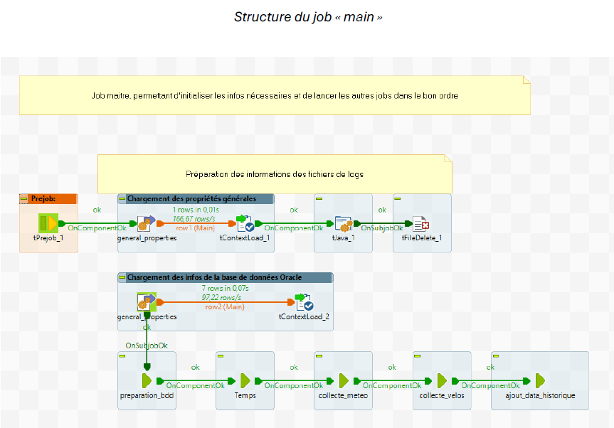
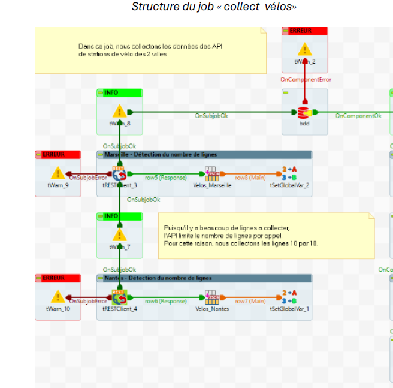
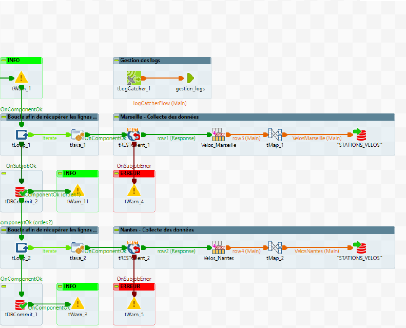
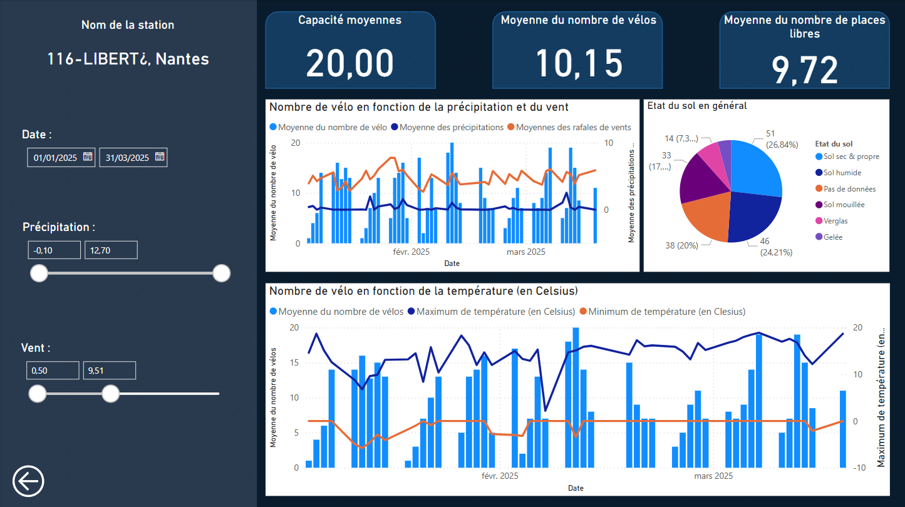

Objectifs de la mission
Lors d'un projet encadrée par l'IUT, nous devions alimenter une base de données ORACLE en utilisant l'ETL Talend. Ainsi Nous pouvions dévelloper un tableau de bord sur les liens entre les stations de vélos et la météo.
Déroulement de la mission
Dans un premier temps, nous avons reçu les données servant à alimenter nos tables Oracle. Elles proviennent d’API publiques (trois au total). Ces API contenaient un nombre important de colonnes et de données ; il fallait donc filtrer celles qui nous intéressaient.
Nous disposions de données concernant la météo et la fréquentation des stations de vélos pour les villes de Nantes et de Marseille, depuis le début de l’année 2025.
Pour les importer dans Oracle, nous devions passer par le logiciel ETL Talend, qui permet d’intégrer des données avec un traitement et une mise en forme adaptés à nos besoins.
Ce logiciel s’organise sous la forme de "jobs", eux-mêmes composés de blocs remplissant chacun une fonction spécifique, s’emboîtant les uns à la suite des autres.
Voici la liste de nos jobs Talend.
Liste des jobs

 
Une fois ces jobs lancés, nous avons pu connecter notre tableau de bord à la base de données.
Pour le réaliser, nous avons commencé par une page présentant des informations générales concernant la météo des villes de Nantes et Marseille. Puis, lorsqu’on sélectionne une station, un bouton permet d’effectuer un drill-down, c’est-à-dire un "zoom" sur la station choisie et les informations la concernant.
Tableau de bord réalisé
